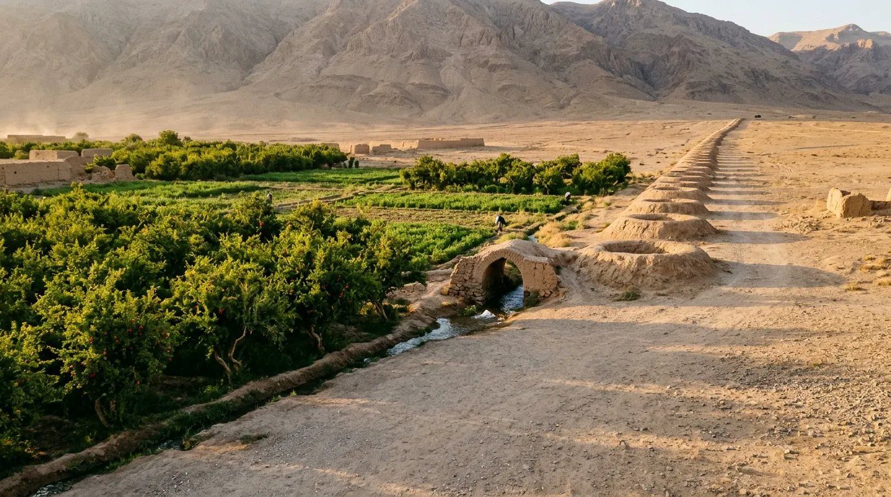
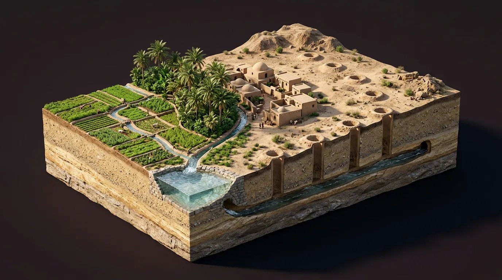
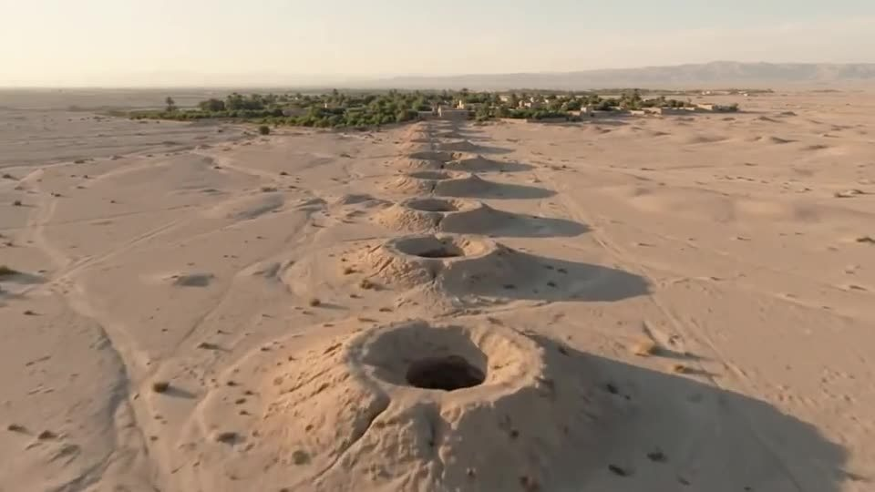

Qanats: los Ríos Escondidos que Hicieron Florecer el Desierto Persa
En buena parte de Irán casi no llueve. Los veranos son tórridos y los ríos escasean. Sin embargo, bajo las montañas que rodean las llanuras hay agua: acuíferos alimentados por la nieve y las lluvias de las alturas. El problema era llevarla hasta los campos sin que el sol la evaporara por el camino. La respuesta persa fue una de las obras de ingeniería más ingeniosas de la Antigüedad: el qanat.
Un túnel con la pendiente justa
Un qanat es un túnel subterráneo con una pendiente muy suave que conduce el agua por gravedad desde el subsuelo de una montaña hasta la superficie, a veces a muchos kilómetros de distancia. No necesita bombas ni ruedas: basta con que la galería descienda un poco menos que el terreno. Al final, el agua aflora en un canal que riega huertos, abastece aldeas y da vida a un oasis.
Todo empieza con el pozo madre, excavado al pie de la montaña hasta alcanzar el agua. Desde allí, los constructores calculaban el recorrido y excavaban el túnel desde el punto de salida hacia arriba, de manera que el agua siempre tuviera hacia dónde correr. El trazado exigía una precisión extraordinaria: si la pendiente era demasiado fuerte, el agua erosionaba el túnel; si era demasiado débil, se estancaba.

La hilera de pozos que se ve desde el aire
Para excavar y ventilar el túnel se abrían pozos verticales cada pocas decenas de metros. Por ellos bajaban los obreros, subían la tierra y entraba el aire. Hoy, vista desde un avión, una línea de cráteres alineados en el desierto delata un qanat: cada agujero es uno de esos pozos, que todavía sirven para inspeccionar y limpiar la galería.
El trabajo era peligroso y especializado. Los excavadores de qanats, los muqanni, formaban un oficio respetado que se transmitía de padres a hijos. Mantener un qanat exigía limpiarlo periódicamente para retirar el lodo y reparar los derrumbes, y las comunidades se organizaban para repartir su agua por turnos.
Una técnica que conquistó medio mundo
Los qanats aparecen en Irán al menos desde comienzos del primer milenio a.C. y el Imperio persa favoreció su expansión: según el historiador Polibio, los persas concedían el usufructo de la tierra durante varias generaciones a quien llevara agua a un terreno seco. Desde allí, la técnica se difundió por Oriente Medio, Arabia y el norte de África, donde se conoce como falaj o foggara, y siglos después llegó a la península ibérica, donde Madrid se abasteció durante siglos de sus propios viajes de agua.
En Irán todavía funcionan miles de qanats. En 2016, la UNESCO inscribió once de ellos como Patrimonio de la Humanidad bajo el nombre de El qanat persa. El de Gonabad, en el noreste del país, tendría según los cálculos más de 2.500 años y sigue regando los campos de la ciudad.

Por qué importa
El qanat es ingeniería invisible: su parte más importante no se ve, porque está bajo tierra. Pero sin ella no habría existido buena parte de la agricultura persa ni muchas de sus ciudades. Y nos recuerda que la tecnología antigua no siempre era monumental: a veces bastaba con entender muy bien la gravedad.
"Un qanat es ingeniería invisible: la obra más importante no se ve, porque está bajo tierra."
— Memorias del Pasado
Fuentes y referencias
- UNESCO, The Persian Qanat (inscripción de 2016)
- Polibio, Historias, libro X
- Henri Goblot, Les qanats: une technique d'acquisition de l'eau, 1979